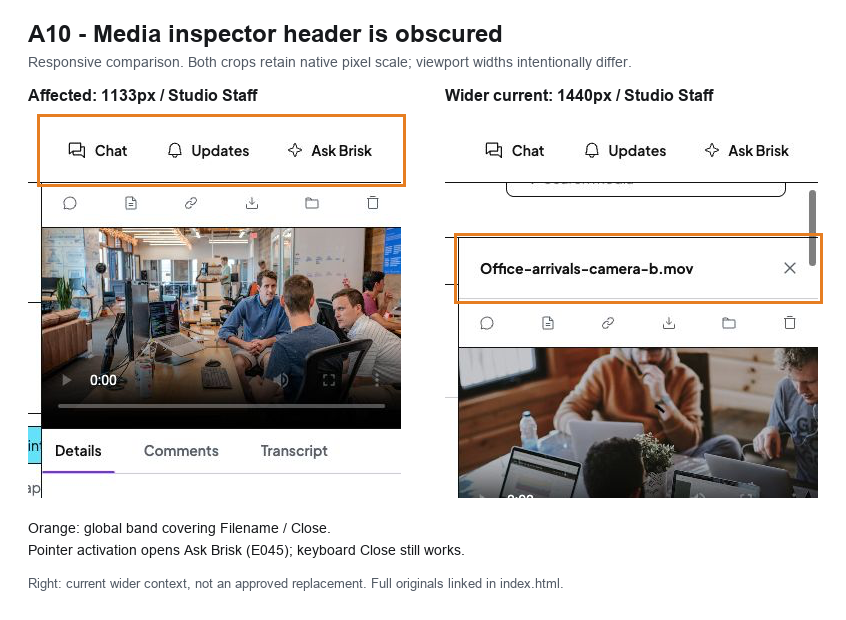
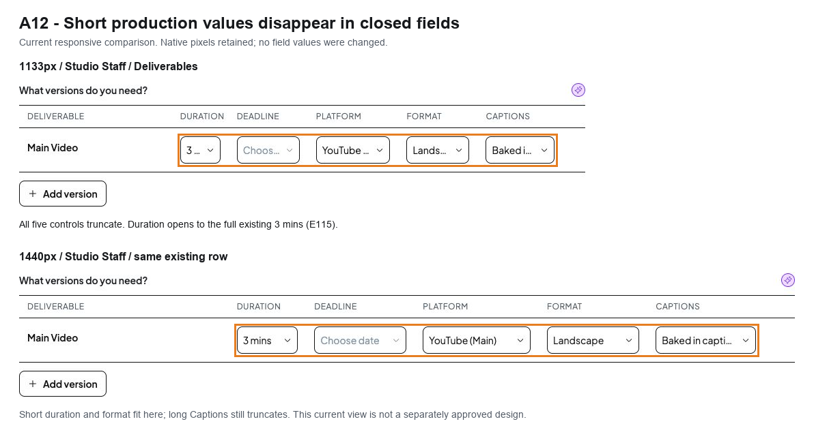
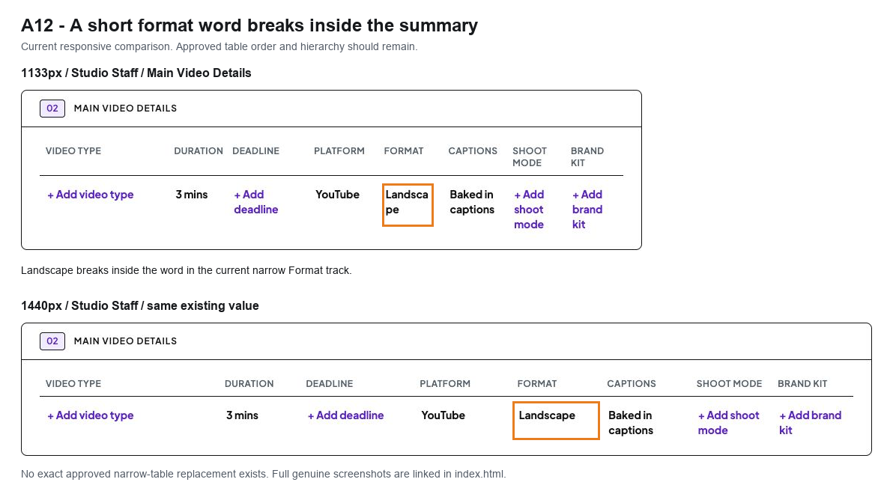
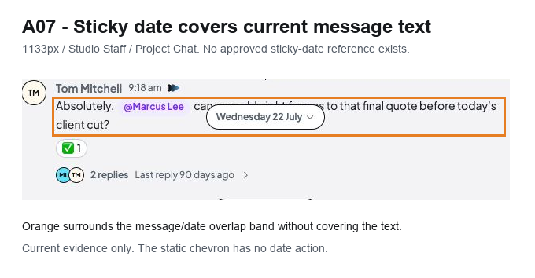
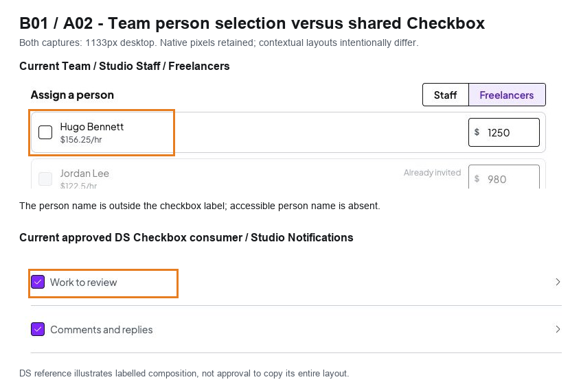

Genuine prototype screenshots. Orange outlines identify affected regions without a filled overlay. Screenshot crops retain their original pixel scale in the PNG files; the browser may scale the preview to fit. Open an image for native resolution. These panels are evidence, not proposed UI or verified fixes.

Different viewport widths are labelled. The reference demonstrates visible identity/Close, not approval of the entire 1440 layout. E045/E046 provide behavioural results separately.
Full original screenshots: E044-media-inspector-hidden-close.jpg | E011-media-keyboard-after.jpg
Same pixel scale and existing data. Wider viewport is a responsive comparison, not approval. Scope is closed-field readability; value recovery is available.
Full original screenshots: BRIEF-deliverables-1133.jpg | BRIEF-deliverables-1440.jpg
The current wider value is readable; the reference does not reopen approved table hierarchy or establish every field fits.
Full original screenshots: BRIEF-summary-1133.jpg | BRIEF-summary-1440.jpg
Single annotated current crop, not a before/after proposal. Current wider clear-gap screenshot is not an approved sticky-date replacement.
Full original screenshots: D-R005-staff-1133.jpg
Team accessible-name defect is verified through DOM/source, not visible pixels alone. DS target/focus rules are textual/source authority; do not infer target size from this crop alone.
Full original screenshots: E008-team-freelancers-1133.jpg | D-R040-staff-1133.jpg